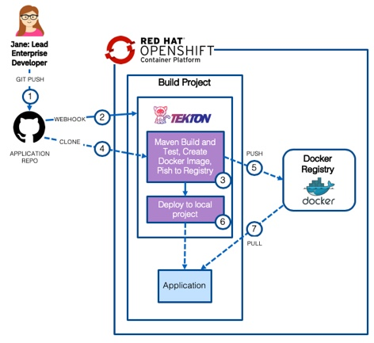

Liberty - Deploy using Tekton (OpenShift Pipelines) on OCP 4.3
This section covers how to deploy the application to RedHat OpenShift 4.3 using a Tekton (OpenShift Pipelines) CI/CD pipeline. The diagram below shows the flow of the pipeline which starts when the developer checks their code in to Git and ends with the application being deployed in a build namespace.
The diagram below shows the following flow:
-
1) A developer commits code to the
application repository -
2) A webhook starts a
tekton pipelinerunning in thebuildproject -
3) A
tekton taskclones the application source code (4) from the application repository, usesMavento compile and test the application before usingbuildahto create aDocker imagewhich is pushed to the docker registry (5) -
6) A
tekton taskdeploys theapplicationto the local namespace using the image from thedocker registry(7)

Deploy the Application
The following steps will deploy the modernized Customer Order Services application in a WebSphere Liberty container to a RedHat OpenShift cluster.
Prerequisites
You will need the following:
- Git CLI
- Red Hat OpenShift Container Platfrom 4.3 with Cluster Admin permissions
- oc CLI
- DB2 Database
- Red Hat OpenShift Pipelines
- Tekton CLI
Getting the project repository
You can clone the repository from its main GitHub repository page and checkout the appropriate branch for this version of the application.
git clone https://github.com/ibm-cloud-architecture/appmod-liberty-tekton.git
cd appmod-liberty-tekton
Create application database infrastructure
As said in the prerequisites section above, the Customer Order Services application uses uses DB2 as its database. Follow these steps to create the appropriate database, tables and data the application needs to:
-
Copy the createOrderDB.sql and initialDataSet.sql files you can find in the Common directory of this repository over to the db2 host machine (or git clone the repository) in order to execute them later.
-
ssh into the db2 host
-
Change to the db2 instance user: `su {database_instance_name}``
-
Start db2:
db2start -
Create the ORDERDB database:
db2 create database ORDERDB -
Connect to the ORDERDB database:
db2 connect to ORDERDB -
Execute the createOrderDB.sql script you copied over in step 1 in order to create the appropriate tables, relationships, primary keys, etc:
db2 -tf createOrderDB.sql -
Execute the initialDataSet.sql script you copied over in step 1 to populate the ORDERDB database with the needed initial data set:
db2 -tf initialDataSet.sql
If you want to re-run the scripts, please make sure you drop the databases and create them again.
Create the Security Context Constraint
In order to deploy and run the WebSphere Liberty Docker image in an OpenShift cluster, we first need to configure certain security aspects for the cluster. The Security Context Constraint provided here grants the service account that the WebSphere Liberty Docker container is running under the required privileges to function correctly.
A cluster administrator can use the file provided here with the following command to create the Security Context Constraint (SCC):
cd Deployment/OpenShift
oc apply -f ssc.yaml
Create the build project
Create the project that will be used for the Tekton pipeline and the initial deployment of the application.
Issue the command shown below to create the project:
oc new-project cos-liberty-tekton
Create a service account
It is a good Kubernetes practice to create a service account for your applications. A service account provides an identity for processes that run in a Pod. In this step we will create a new service account with the name websphere and add the Security Context Constraint created above to it.
Issue the commands shown below to create the websphere service account and bind the ibm-websphere-scc to it in each of the projects:
oc create serviceaccount websphere -n cos-liberty-tekton
oc adm policy add-scc-to-user ibm-websphere-scc -z websphere -n cos-liberty-tekton
Import the Tekton resources
Import the Tekton Tasks, Pipeline and PipelineResources in to the project using the commands shown below:
cd ../../tekton/tekton-only
oc apply -f gse-apply-manifests-pvc-task.yaml
oc apply -f gse-buildah-pvc-task.yaml
oc apply -f gse-build-deploy-pvc-pipeline.yaml
oc apply -f gse-build-pipeline-resources.yaml
Run the pipeline
The recommended way to trigger the pipeline would be via a webhook (link) but for simplicity the command line can be used. Issue the command below to trigger the pipeline:
tkn pipeline start gse-build-deploy-pvc-pipeline -n cos-liberty-tekton
When prompted, accept the default git-source value as shown below:
When prompted, accept the default docker-image value as shown below:
View the pipeline logs
- In the OpenShift Container Platform UI, change to the Developer view, select the
cos-liberty-tektonproject and then select Pipelines. Click on the Last Run
- Select Logs
- The pipeline will execute and the logs will be displayed
- Once both the
gse-buildandgse-apply-manifestssteps are complete, the pipeline is finished.
Validate the application
Now that the pipeline is complete, validate the Customer Order Services application is deployed and running in cos-liberty-tekton project
- In the OpenShift Console, navigate to Topology view and click on the
cos-libertyDeploymentConfig to view deployment details, includingPodsServicesandRoutes
Topology
- From this view you can also view the route for the application. Note that the URL is < application_name >-< project_name >.< ocp cluster url >. In this case the project name is
cos-liberty-tekton
- Add
/CustomerOrderServicesWebto the end of the URL in the browser to access the application

- Log in to the application with
username: rbarciaandpassword: bl0wfish
Review and Next Steps
In this section you configured a CI/CD pipeline for the CustomerOrderServices application that builds a single immutable image for the latest version of the application and then deploys it to a dev environment.